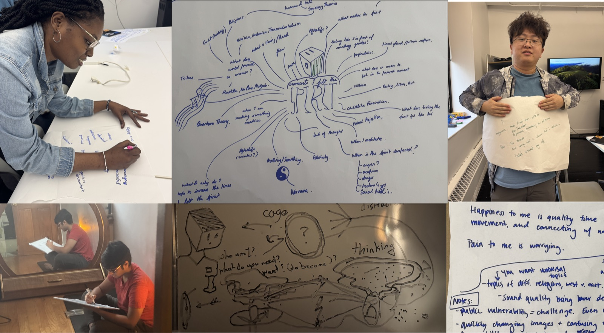
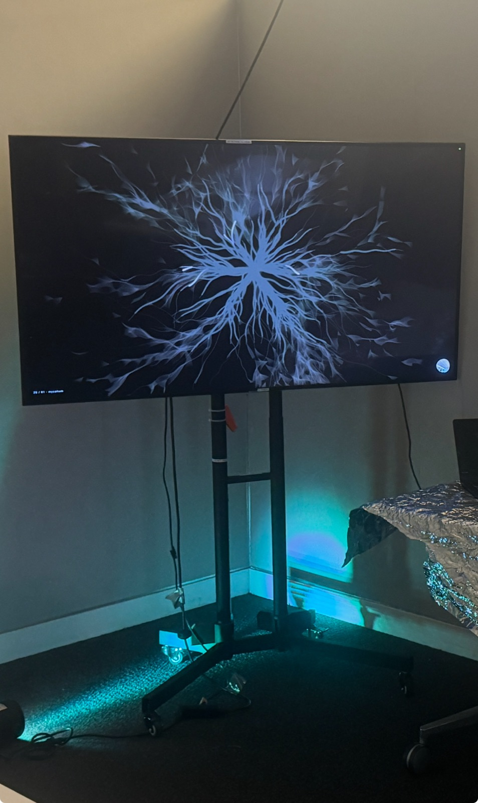
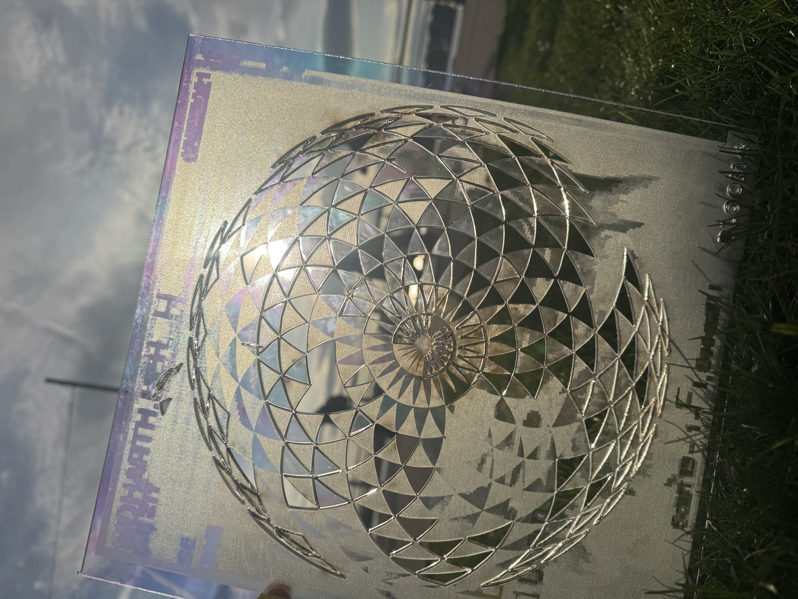

What is being sold to you
as presence,
and what is presence
when nothing is being sold?
A seated installation in three parts.
A 6-minute body-driven visual journey. A satirical overstimulation opening. A cork wall for handwritten reflection.
The body controls the room. The room responds with patterns. The room is also a critique of every wellness app you have ever been sold.

It started as a question I asked twenty people: when have you felt the spirit? The answers — at a concert, holding my grandmother's hand, looking up at stars in Idaho, when I make something — became the seed of every scene in this work.
A mind-map taped to a studio wall. A sheet of butcher paper with twenty fragments of nirvana, nothing, somewhere, somebody. Drawings of cages and bodies and questions: who am I · what do you need · want · to become?
Software was never the point. The software is the room I built for the question to live in.
Over the studio year I built roughly fifty visual modes — small generative programs that draw to a canvas each frame and accept inputs from a BrainBit EEG (stillness, focus, alpha rhythm) and a Microsoft Kinect (hand position, motion energy, lean, depth silhouette).
Celtic interwoven · Flower of Life · rose · sand · lunar phases · golden phyllotaxis · fractal Lichtenberg branches · bioluminescent organic glow · volumetric ray-marched nebulae. Each procedurally generated. Each responsive to the body in the chair.
Curation became the harder problem. From fifty I chose fifteen, then ordered them across a nine-chapter arc tuned to a pre-recorded narration in a Watts / Sagan register — soft authority without instruction.
Wellness apps narrate at you.
Bloom meditates with you.
A 75-inch television faces a single meditation chair. The attendant places the BrainBit on the visitor's forehead. The visitor presses begin. A 40-second overstimulation collage plays — Times Square walkers, news, ads, surveillance, a wellness commercial — ending with the popup "You" Are Not Enough · Install. The popup is pressed. The meditation begins.
| № | Chapter | Dur. | Body response |
|---|---|---|---|
| 01 | silence · breath ring | 55s | stillness widens the ring |
| 02 | the singing · volumetric nebula | 22s | lean zooms the camera |
| 03 | rare earth · mitotic cells | 23s | cells divide toward the hand |
| 04 | patterns · Celtic interwoven | 14s | lean scales the knot |
| 05 | patterns · Flower of Life | 8s | — |
| 06 | beauty · rose mandala | 27s | lean opens the bloom |
| 07 | inheritance · constellation | 24s | stillness brightens connections |
| 08 | mindful™ · wellness satire | 27s | motion intensifies the glitch |
| 09 | the watchers · field of eyes | 23s | eyes track the hand |
| 10 | let it go · pixel-sorted nature | 28s | motion accelerates dissolve |
| 11 | impermanence · sand mandala | 20s | motion erodes the pattern |
| 12 | impermanence · lunar phases | 8s | lean scales the cycle |
| 13 | bloom · golden phyllotaxis | 34s | lean scales the spiral |
| 14 | bloom · Lichtenberg branches | 14s | — |
| 15 | bloom · breath ring (close) | 30s | stillness widens the final ring |
Three stations in Room 1205. The visitor sits. The body is read. The room responds.
Afterwards the visitor takes a card and writes one thing — what was beautiful · who has held you · what can you put down. They pin it to the cork wall. The next visitor finds it.
By Saturday night the wall is the show's analog memory — strangers' kindness to strangers, in their own handwriting.

Before the visitor can rest, they are shown what they have been resting from. A 40-second collage — Times Square walkers, news, ads, surveillance, AI weirdness, a wellness commercial — ends with the popup "You" Are Not Enough · Install. The audience watches Install get pressed. What they receive is Bloom — a wellness app that holds them.
A YOLOv8 + ByteTrack tracker processes Times Square footage. Thirty-four percent of unique pedestrian IDs get a hidden story — going through a breakup · missing their grandmother · in love for the first time. The tags flicker over the bodies as they pass.
The piece argues that every body in the frame is a whole life the surveillance camera does not see.
A single CCTV scans the room while the phrase be here now spawns at the visitor's hand position in soft pastel typography — wellness commodified back into surveillance language.
The visitor rotates the camera by leaning. The text accumulates, fades, accumulates.
The closing popup of the overstim assembles fifteen unique iOS-modal messages into an orbital mandala, then chewing-gum stretches into a screen-filling banner before a white flash drops into meditation.
Each popup is a different small violence. The user is asked to Install.

A small altar with a mirror-ball printed marker. An optional ninety-second visual coda for visitors who want a quieter second beat — image-tracked through an Apple Vision Pro, held in the lap.
For those who stay. The piece is shorter than the six-minute journey, slower than the six-minute journey. A small breath after the room.
You have always been
bloom.
The final words of the meditation are a closing release — a slow exhalation, a permission. The visitor opens their eyes and the closing trajectory of their own brain-stillness from the last six minutes appears as a single golden line traced across the screen. It fades.
The visitor stands, exits past the cork wall, and pins a card.
The work is finally a small argument for staying. Most of the things sold to us as presence are not present and are not for us. The piece does not claim to be the answer; it claims to be a room that holds you for six minutes while you decide what you want to put down.
MFA Design + Technology · Parsons
Friday May 15 + Saturday May 16, 2026
Room 1205 · 63 Fifth Avenue · NYC
Tools. BrainBit EEG · Microsoft Kinect · HTML5 canvas + three.js + WebGL · Ultralytics YOLOv8 + ByteTrack for the walker tracker · Adobe Premiere Pro for the overstim collage · Python WebSocket bridges for the BrainBit and Kinect streams.
Sources used in the overstim collage. Fight Club (Fincher, 1999) · 2001: A Space Odyssey (Kubrick, 1968 — HAL 9000) · Idiocracy (Judge, 2006) · Banksy "Christ with Shopping Bags" (2005) · Barbara Kruger "I shop therefore I am" (1987) · Roy Lichtenstein "Blonde Waiting" (1964) · Andy Warhol Campbell's Soup Cans (1962) · news, ads, and viral content under fair use for educational thesis work.
Thank you. Clarinda, Nancy, the cohort, everyone who sat in the chair, the people whose answers became this work.